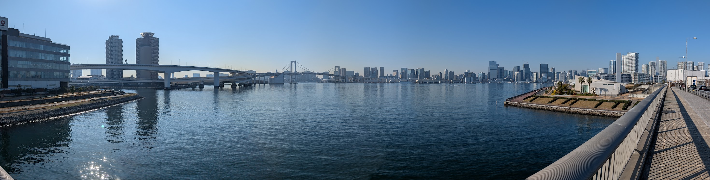

ASSETS 2027: the 29th International ACM SIGACCESS Conference on Computers and Accessibility
To be announced
The 29th International ACM SIGACCESS
Conference on
Computers and Accessibility
Tokyo, Japan
October 24—27 2027

Check out the venue